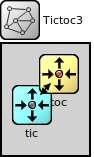

Package: default
Tictoc3
network(no description)
Usage diagram
The following diagram shows usage relationships between types. Unresolved types are missing from the diagram.
Properties
| Name | Value | Description |
|---|---|---|
| isNetwork |
Source code
network Tictoc3 { submodules: tic: Txc3 { parameters: @display("i=,cyan"); } toc: Txc3 { parameters: @display("i=,gold"); } connections: tic.out --> { delay = 100ms; } --> toc.in; tic.in <-- { delay = 100ms; } <-- toc.out; }File: txtc3.ned
 This documentation is released under the Creative Commons license
This documentation is released under the Creative Commons license